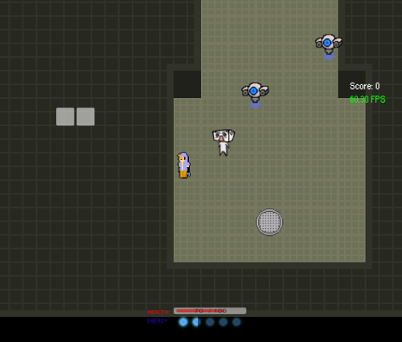

|  |
Contributor(s): Nina Volkmuth, Eduardo Sanchez, Chanel Trang, Arielle Chongco, Brendon Wai, Winston Liang, Christopher Luong, Ian Tokuyama, Jen Gip
Date: In Progress Language: C# (made in Unity) Description: A hack-in-slash game where you play as a hacker who hacks into enemy robots in order to use them and fight other robots. You also have a random tofu man who follows you around... My Contributions: I'm working as a programmer. I've done a variety of tasks including (but not limited to) spawning, enemy hacking, health drain, level progression, Tofu Man movement, and UI. I've also helped design and create levels with Tiled/Tiled2Unity. Download: Click Here Repository: Click Here |